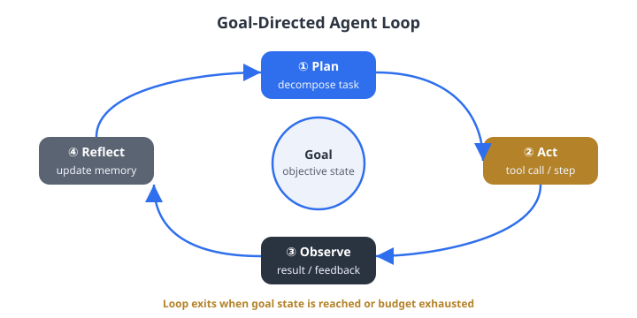

Large Language Models in Finance · Practical Session 17
Building Agentic Iteration Loops
Hands-on: a root-finding loop and a credit-risk stress loop — both the same machine.
Juan F. Imbet · Paris Dauphine – PSL University
Summer school · math one click away — press m or click ⚙ "Under the hood"
Overview
Where this session is going
Recap — the goal-directed loop and its three parts: agents, skills, hooks.
Three guided problems — an IRR search, a success-gate hook, a credit mini case.
Mini case + debate — wrap the credit analysis in a real loop, then argue whether to lend.
Worked solutions — the brackets tighten, the hook fires, the EL gets reconciled.
the bigger picture
The root-finder and the credit memo are literally the same machine: a state variable,
a validator, and a definition of "residual." Only the residual changes — a number, a failing test,
or a committee's objection.

Figure. The goal-directed loop (simplified; the chapter's full loop is observe → propose → act → evaluate → revise) — the engine behind every problem in this session.
Source: Chapter 17.
The loop, its three building blocks, and the one rule we exploit twice today.
The shape of the thing
A loop is feedback turned into the next action
Observe → Propose → Act → Evaluate → Revise, again and again, until a check says "good
enough" or a stopping rule fires. The hallmark of a genuine loop: the next move depends on
the last result.
Agents — who acts
Worker, critic, validator, planner, refactorer. Their value is the durable change to state —
measured by the diff, not by the transcript.
Skills — how work repeats
A skill is to a workflow what a function is to a computation: named, scoped, repeatable, composable.
Freezes "how we do X here" into executable form.
Hooks — what may never break
Constraints that fire automatically, outside the agent's control. Pre-action = pre-trade limit;
post-action = post-trade surveillance.
the rule we exploit twice today
Never let the agent's own "done" end the loop. Termination must hang on a check the agent does
not control — a tolerance hook.
The two recipes you'll use
Root-finding and expected loss, in plain words
Sign-and-magnitude search
From a bracket where the function is negative at one end and positive at the other, the answer is
trapped between them. Lean your next guess toward the end where the function is closer to zero.
Expected loss (credit)
How much you expect to lose = chance of default × fraction lost if it defaults × amount at stake.
Written as a formula, this identity must reconcile in every column of the memo.
today's success criterion (illustrative bank policy)
Stressed EL ≤ 150 bps → lend (clean) · 150 < stressed ≤ 500 bps →
conditional / modify · stressed > 500 bps → decline.
"Low risk" only if base ≤ 50 bps and stressed ≤ 150 bps.
02
Guided problems
P1 the directed search · P2 the guardrail that defines "done" · P3 the judgment a committee must accept.
How to work the next three problems
Three angles on one loop
P1 — IRR loop (transfer): apply the sign-and-magnitude search to solve for an IRR from feedback alone — no calculus.
P2 — the success gate: write the tolerance hook in bash that vetoes a premature "success" claim.
P3 — credit mini case: compute base vs. stressed EL and make the lend / modify / decline call.
the bigger picture
P1 and P2 are the same loop from two angles: P1 is the agent's directed search; P2 is the
guardrail that defines "done." P3 scales the idea up to a judgment a committee must accept —
with explicit goals, hooks, and an unsigned sign-off block.
Companion notebooks: code/notebooks/17-loops-goals-iterations/ — run the evaluator, the stop hook, and the EL reconciliation end-to-end.
P1 · transfer task
Find an IRR using only feedback — no calculus
This is the root-finder's loop with \(x\) renamed \(r\) and \(f\) renamed NPV — the same machine,
only the residual changes. You may only evaluate NPV at a trial rate and read the result.
The project
Cash flows: \(-100\) at \(t=0\), \(+60\) at \(t=1\), \(+60\) at \(t=2\).
Find the rate \(r\) where NPV hits zero.
Sign rule: NPV > 0 ⇒ the rate is too low, so raise \(r\).
\(r\)
\(\mathrm{NPV}(r)\)
Status
0.00
+20.00
Positive — rate too low
0.20
−8.33
Negative — overshot
Your tasks
Confirm the first two evaluations bracket the root. Where does the IRR lie?
From the sign and magnitude of NPV, propose the next two trial rates \(r_3, r_4\).
Are you within tolerance yet? Which loop component decides — the agent or the hook?
P2 · build it from spec
Write the gate that decides when "done" is real
Do not copy code — build it from the specification. The IRR evaluator appends one line per
call to run-log.txt; the last line is the current state on disk.
Specification — a bash stop hook that…
reads the latest logged NPV from run-log.txt;
exits 0 (allow "success") only if \(|\mathrm{NPV}|<0.05\);
otherwise prints a clear, human-readable message and exits 1, which blocks the agent from declaring success.
why this matters
This single script is the difference between feedback-driven iteration and premature success.
Without it, the agent can announce "done" at \(r=0.135\) (\(|\mathrm{NPV}|=0.56\)) and be believed.
With it, termination hangs on an external, deterministic check — the seven-step template's Step 5.
Plan first: how do you grab the last line's number
(tail / grep / cut),
and how do you test an absolute-value inequality in shell? Then write it. Reference solution follows later.
P3 · credit mini case
Atlas Foods wants a revolver — lend, modify, or decline?
Atlas Foods (fictional; figures illustrative) seeks a committed revolver with
EAD = \(\$\)20m. The base-case PD model and LGD agent report:
Input
Base case
Stressed
Probability of default (PD)
2.0%
8.0%
Loss given default (LGD)
35%
50%
Exposure at default (EAD)
\(\$\)20m
\(\$\)20m
Stressed PD and LGD are the loop's outputs after a combined shock (revenue −20%,
margin −300 bps, rate +250 bps, DSO +25 days), with recovery deteriorating on illiquid collateral.
Your tasks
Compute base and stressed EL, in dollars and in bps of EAD.
Apply the policy (recap slide): lend / modify / decline?
May the memo say "low risk"? Which hook decides, and why is that better than leaving it to the writer?
03
Mini case study and discussion
Design the Atlas loop, then debate whether a green loop is enough to lend.
Mini case study · design
Wrap Atlas in a loop, not a one-shot memo
Sketch, in two minutes with a neighbour, the four pieces a real goal-directed loop needs:
Goal file — state the success criterion (EL thresholds), a stopping rule (max iterations or no-progress), and one anticipated failure mode (leakage, premature "low risk").
Agents — which two or three roles are genuinely needed (resist excessive delegation)? A function computes EL; only open-ended judgment needs an agent.
Hooks — which automatic checks must fire, and when (pre- vs. post-action)?
Escalation trigger — what condition forces a human into the loop before it proceeds? (Materiality threshold, irreconcilable agents, irreversible action.)
Pattern selection — which of the lecture's five design patterns best fits the Atlas credit workflow? Name it and justify it.
the bigger picture
A good design names a checkable goal, a guaranteed-terminating stopping rule,
at least one outcome-tied hook, and an escalation point that does not depend on the
agent's goodwill.
Discussion · debate (5 minutes)
"Every hook is green and the skeptic signed off. Should the bank lend?"
Argue both sides, using the lecture's vocabulary:
Goodhart / fake convergence — could the hooks be green while the true goal is unmet? What would gaming look like here? (Recall: a model agent rewarded for AUC will reach for leakage; a memo agent rewarded for a clean checklist will phrase around it.)
Accountability — the skeptic's sign-off is not sign-off (SR 11-7). Who owns the decision? What does the unsigned block add?
Audit trail — if a regulator asks "where did the stressed 8% PD come from?" three months later, can you answer? Does your loop emit a structured run log?
the point
A green loop produces a defensible recommendation, not a decision. "Lend" is a human act that
the loop can evidence but never authorize. Sign-off is an event with a time, an identity, and a scope —
not a property of the artifact.
04
Solutions
The bracket tightens, the hook fires, the expected loss reconciles — and the same machine appears twice.
P1 solution
The IRR bracket tightens to ≈ 13.1%
(a) NPV goes \(+20.00 \to -8.33\) as \(r\) goes \(0.00 \to 0.20\): it crosses
zero in between, so the IRR lies in \((0.00, 0.20)\).
\(r\)
\(\mathrm{NPV}(r)\)
Reasoning
0.00
+20.00
Positive; rate too low
0.20
−8.33
Negative; bracket \((0.00, 0.20)\)
0.13
+0.09
Root in \((0.13, 0.20)\)
0.135
−0.56
Root in \((0.13, 0.135)\)
0.131
−0.04
\(|\mathrm{NPV}|<0.05\): IRR ≈ 13.1%
Who decides "done"?
The hook, not the agent. At \(r=0.135\), \(|\mathrm{NPV}|=0.56\) — still above
tolerance. The agent proposes; the tolerance hook (P2) is the only thing allowed to certify convergence.
P2 solution · the success-gate hook
A deterministic veto the agent cannot skip
#!/usr/bin/env bash
# stop-hook: veto "success" unless the latest |NPV| < 0.05
set -euo pipefail
last=$(grep -o 'NPV=[-0-9.eE]*' run-log.txt | tail -n1 | cut -d= -f2)
ok=$(python -c "print(1 if abs(float('$last')) < 0.05 else 0)")
if [ "$ok" -ne 1 ]; then
echo "BLOCKED: |NPV|=$last >= 0.05 -- not converged" >&2
exit 1 # nonzero exit = veto: the loop may NOT stop
fi
echo "OK: |NPV| < 0.05 -- converged"
exit 0
key properties
It reads the last line (current state on disk), it is deterministic
(same log → same verdict), and the agent cannot skip it — the harness treats the nonzero exit as a
hard veto. This is the seven-step template's step 5 (validate) made real.
P3 solution · Atlas Foods expected loss
Stressed EL = 400 bps → conditional / modify
70 bps
base EL — \(\$\)0.14m
400 bps
stressed EL — \(\$\)0.80m
modify
policy call (150–500 bps)
Decision
Stressed EL = 400 bps falls in (150, 500] ⇒ conditional / modify — not a clean lend,
not a decline. Reasonable conditions: a smaller facility, tighter covenants, more collateral (to cut
LGD), and pricing that compensates for the stressed EL.
may the memo say "low risk"?
No. That gate requires base ≤ 50 and stressed ≤ 150 bps; here base = 70 and stressed = 400.
The hook decides, not the writer — language is a control surface, and the phrase must be earned by the
arithmetic, not chosen by the author of the memo.
Mini-case solution · which design pattern?
Build → stress-test → red-team → finalize
The intended answer: the credit-model pattern — a specialization of
scaffold–draft–audit–repair with an explicit adversarial skeptic stage and mandatory
stress testing (adverse and severe, not just base).
The goal is a judgment, not a single machine-checkable number, so generate–test–revise alone is too thin.
It is high-stakes: the two distinguishing stages — mandatory stress testing and a red-team skeptic demanding sensitivities and peer benchmarks — are exactly what Atlas needs. SR 11-7 governance is encoded as a pattern stage, not an afterthought.
It finalizes into a governed artifact with an unsigned sign-off block, encoding accountability: the loop fills in everything except the signature.
patterns nest
Sub-patterns still sit inside: the PD-model build stage is generate–test–revise; the red-team is
planner–executor–critic. The data ingestion is build–validate–document. Patterns compose.
Wrap-up
What you practised — and why it's one machine
Directed search from feedback alone (P1) — the engine inside every loop in the book.
A tolerance hook (P2) that makes "done" external to the agent.
EL reconciliation and a policy-gated lend decision (P3) — the credit loop in miniature.
A governance debate (discussion) — green hooks do not substitute for human accountability or a reproducible audit trail.
the bigger picture
The root-finder and the credit memo are the same machine: a state variable, a validator, and
a definition of "residual." Only the residual changes — a number, a failing test, or a committee's
objection. A loop adds value exactly to the degree each iteration's feedback informs the next action.
Take it further:code/notebooks/17-loops-goals-iterations/
runs both loops end-to-end. See book Chapter 17 and Appendices A–F for the full treatment and concrete
tooling (Claude Code, Codex, the SDKs, Git, Cline).